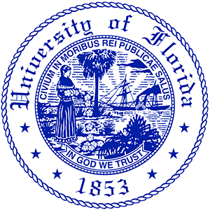

Resume

Go Gators!
University of Florida | Master of Arts in Mass Communication specializing in Web Design and Online Communication
University of Florida | Bachelor of Science in Public Relations
Social Media Manager | Freelancer
January 2018 - Present | Winter Park, FL
- Design creative content for various social media platforms using Adobe applications
- Develop and manage social media campaigns to increase engagement, brand awareness and website traffic
- Increase products sales through product promotions, social media contests and giveaways
- Designed business cards, brochures, and presentations for client
Independent Product Consultant | doTERRA
March 2017 - Present | Winter Park, FL
- Empower clients to take control of their health and advocate for a nontoxic lifestyle
- Plan and teach classes that educate clients on the benefits of essential oils
- Facilitate the sales of doTERRA products while supporting customers with ongoing education and product assistance
Public Relations/Marketing Intern | Graham Leak Branding
May 2017 - August 2017 | Winter Park, FL
- Wrote multiple press releases for clients which resulted in client media coverage
- Developed creative content using for newsletters and social media platforms
- Assisted in the development of social media strategies and executions
- Worked directly with clients in event marketing and promotions
Administrative Assistant | Advanced Hair & Skin Institute
May 2016 - December 2017 | Gainesville, FL
- Facilitated and conducted client product sales and purchases
- Managed scheduling of clients, new client bookings and paperwork, files and charts
- Assisted productivity and marketing of office events
- Proficient in Adobe Creative Cloud (InDesign, Photoshop, Premiere Pro, Illustrator)
- Strong working knowledge of of HTML, CSS and JavaScript
- Extensive knowledge of social media (Instagram, Twitter, Facebook, MailChimp)
- Hootsuite certified with social media management